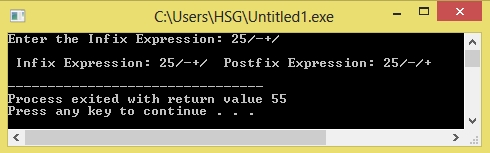

/*C Program convert Infix to Postfix conversion*/
#include<ctype.h>
#define SIZE 100
char s[SIZE];
int top = -1;
push(char data)
{
s[++top] = data;
}
char pop()
{
return (s[top--]);
}
int ca(char data) {
switch (data) {
case '#':
return 0;
case '(':
return 1;
case '+':
case '-':
return 2;
case '*':
case '/':
return 3;
}
}
int main() {
char infix[100], postfix[100], ch, data;
int i = 0, k = 0;
printf("Enter the Infix Expression: ");
scanf("%s", infix);
push('#');
while ((ch = infix[i++]) != '\0')
{
if (ch == '(')
push(ch);
else if (isalnum(ch))
postfix[k++] = ch;
else if (ch == ')') {
while (s[top] != '(')
postfix[k++] = pop();
data = pop(); /* Remove ( */
} else
{
while (ca(s[top]) >= ca(ch))
postfix[k++] = pop();
push(ch);
}
}
while (s[top] != '#')
postfix[k++] = pop();
postfix[k] = '\0';
printf("\n Infix Expression: %s Postfix Expression: %s\n", infix, postfix);
}
Output:
